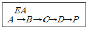
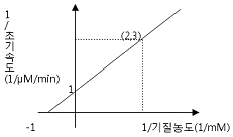
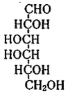

식품기사 (2012-05-20 기출문제)
1과목: 식품위생학
1. 위해평가(risk assessment)의 주요 요소가 아닌 것은?
- 위험성 확인
- 위험성 결정
- 노출 평가
- 위해 치료
(정답률: 91%)

2. 미생물에 의한 손상을 방지하여 식품의 저장수명을 연장시키는 식품첨가물은?
- 산화방지제
- 보존료
- 살균제
- 표백제
(정답률: 87%)
3. 식품을 통해 전염될 수 있는 virus성 전염병은?
- 콜레라
- 장티푸스
- 유행성간염
- 이질
(정답률: 74%)
4. 페놀수지, 요소수지, 멜라닌수지와 같은 열경화성 합성수지의 제조시 가열·가압조건이 부족할 때 반응이 되지 않고 유리되어 용출될 수 있는 것은?
- 착색제
- 가소제
- 산화방지제
- 포름알데히드
(정답률: 86%)
5. HACCP에 대한 설명 중 틀린 것은?
- 위해요소분석(HA)과 주요관리기준(CCP)을 의미한다.
- 자율적 위생관리에서 정부 주도형 위생관리를 하기 위한 제도이다.
- HACCP 도입업소는 회사의 신뢰성이 향상될 수 있다.
- 위해발생요소를 사전에 관리하는 방법이다.
(정답률: 84%)
6. 표준한천배지(plate count agar)의 조성에 포함되지 않는 것은?
- Tryptone
- Yeast extract
- Dextrose
- Lactose
(정답률: 68%)
7. 일반 독성 시험이 아닌 것은?
- 급성 독성 시험
- 아급성 독성 시험
- 만성 독성 시험
- 변이원성 시험
(정답률: 81%)
8. 어떤 식품을 먹기 직전에 끓였는데도 식중독 사고가 일어났다. 만약 세균성 식중독이라면 그 추정원인 세균은?
- 살모넬라균
- 비브리오균
- 황색 포도상구균
- 여시니아 엔테로콜리티카균
(정답률: 80%)
9. GMO 작물을 만드는 과정이 아닌 것은?
- 염기다형성 마커 이용법
- 원형질체 융합법
- 유전자총 이용법
- 아그로박테리움 이용법
(정답률: 41%)
10. 식품의 유통과정상 문제점이 발생하였을 때 생산자, 영업자 등이 그 제품을 회수하여 폐기하는 제도는?
- recall 제도
- Quality control 제도
- GMP 제도
- HACCP 제도
(정답률: 82%)
11. 저온유통이 식품의 품질에 미치는 영향이 아닌 것은?
- 산화반응속도 저하
- 효소반응속도 저하
- 미생물 번식 억제
- 식중독균 사멸
(정답률: 88%)
12. 3,4-benzopyrene에 대한 설명 중 틀린 것은?
- 식품 중에는 불로 구운 고기에만 존재한다.
- 다핵 방향족 탄화수소이다.
- 발암성 물질이다.
- 대기오염 물질 중의 하나이다.
(정답률: 85%)
13. 일반적으로 식물체의 표면에서 광선이나 자외선에 의해 분해되기 쉽고, 식물체 내에서도 효소적으로 분해되며 비교적 잔류기간이 짧은 유기농약은?
- 유기염소제
- 유기수은제
- 유기인제
- 유기비소제
(정답률: 79%)
14. 다음 중 수분함량 측정방법이 아닌 것은?
- Soxhlet 추출법
- 감압가열건조법
- Karl-Fisher법
- 상압가열건조법
(정답률: 83%)
15. 식품첨가물에 대한 설명 중 옳은 것은?
- 식품첨가물의 안전성 검토에는 1일 섭취허용량을 고려한다.
- 쨈류에 식품첨가물인 보존료를 첨가한 경우 다른 가열공정을 하지 않고 안전하게 유통시킬 수 있다.
- 식품첨가물 공전으로 해당식품에 사용하지 못하도록 한 합성보존료, 색소 등의 식품첨가물에 대하여 사용을 하지 않았다는 표시를 할 수 있다.
- 식품첨가물 제조업은 영업허가를 받아야 한다.
(정답률: 51%)
16. 장티푸스에 대한 설명으로 옳은 것은?
- 병원균은 Salmonella paratyphi 이다.
- 잠복기는 2~3일 전후이다.
- 쌀뜨물과 같은 심한 설사를 한다.
- 완치된 후에도 보균하여 균을 배출하는 경우도 있다.
(정답률: 75%)
17. 수분함량이 적거나 당도가 높은 전분질 식품을 주로 변패 시키는 미생물은?
- 효모
- 곰팡이
- 바이러스
- 세균
(정답률: 76%)
18. 폴리염화비페닐(PCB)이 환경 오염물로서 특히 문제가 되어 있는 것은 화학물질로서의 어느 특성에 의한 것인가?
- 이산화성
- 난연성
- 소수성
- 난분해성
(정답률: 86%)
19. 공장폐수에 의한 식품오염에 대한 설명으로 옳은 것은?
- 도금공장의 폐수는 주로 유기성 폐수로서 유해물질이 농·수산물 등에 직접적인 피해를 줄 수 있다.
- 식품공장의 폐수는 주로 무기성 폐수로서 BOD가 높고 부유물질을 다량 함유하며, 용수를 오염시켜 2차적인 피해를 주는 경우가 있다.
- BOD란 물 속에 있는 오염물질이 생물학적으로 산화되어 유기성 산화물과 가스가 되기 위해 소비되는 산소량을 ppm으로 표시한 것이다.
- 미나마타병은 공장폐수 중 메틸수은 화합물에 오염된 어패류를 장기간 섭취하여 발생한 것이다.
(정답률: 75%)
20. 경구감염병과 세균성 식중독의 차이점을 올바르게 설명한 것은?
- 경구감염병은 세균성 식중독에 비하여 다량의 미생물 균체가 있어야 감염이 가능하다.
- 경구감염병은 세균성 식중독에 비하여 2차 감염이 거의 일어나지 않는다.
- 경구감염병은 세균성 식중독에 비하여 잠복기가 길다.
- 경구감염병은 세균성 식중독에 비하여 면역성이 없다.
(정답률: 71%)
2과목: 식품화학
21. 곡류의 단백질에 대한 설명으로 올바른 것은?
- 대부분이 글로불린(globulin)과 프롤라민(prolamin)이다.
- 쌀의 주요 단백질은 프롤라민에 속하는 오리제닌(oryzenin)이다.
- 보리의 주요 단백질은 프롤라민에 속하는 호르데닌(hordenin)이다.
- 옥수수의 주요 단백질은 프롤라민에 속하는 제인(zein)이다.
(정답률: 69%)
22. 지질의 특성과 그 분석 방법이 잘못 연결된 것은?
- 산가 - 유리지방산
- 요오드가 - 이중결합
- 비누화가 - 평균 분자량
- 과산화물가 - 유지의 녹는점
(정답률: 58%)
23. 식용유지 혹은 지방질 식품에서 항산화제에 부가적으로 효과를 주는 시너지스트(synergist)가 아닌 것은?
- 구연산
- 레시틴
- 아스코브산
- 유리지방산
(정답률: 68%)
24. 유지의 산패 측정법에 대한 설명이 틀린 것은?
- peroxide value는 지방산화가 계속 될수록 함께 계속해서 증가 한다.
- TBA값은 지방산패 중 생성된 malonaldehyde를 측정하는 방법이다.
- Anisidine값은 주로 2-alkenal의 함량을 측정한다.
- CDA값은 공액형이중결합을 측정하는 방법이다.
(정답률: 47%)
25. 기능이 다른 유화제A(HLB 20)와 B(HLB 4.0)를 혼합아여 HLB가 5.0인 유화제혼합물을 만들고자 한다. 각각 얼마씩 첨가해야 하는가?
- A 85(%) + B 15(%)
- A 75(%) + B 25(%)
- A 65(%) + B 35(%)
- A 55(%) + B 45(%)
(정답률: 53%)
26. 증류수에 녹인 비타민 C를 정량하기 위해 분광광도계(spectrophotometer)를 사용하였다. 분광광도계에서 나온 시료의 흡광도 결과와 비타민 C 함량 사이의 관계를 구하기 위하여 이용해야 하는 것은?
- 람베르트-베르법칙(Lambert-Beer law)
- 페히너공식(Fechner 's law)
- 웨버의 법칙(Weber's law)
- 미켈리스-멘텐식 (Michaelis-Menten's equation)
(정답률: 85%)
27. 곡류의 지방에 대한 설명으로 맞는 것은?
- 배아부보다 배유부에 더 많이 분포되어 있다.
- 주요지방산을 올레산(oleic acid)과 리놀레산(linoleic acid)이다.
- 포화지방산이 많아 산패가 쉽게 일어나지 않는다.
- 소량의 콜레스테롤이 들어있다.
(정답률: 70%)
28. 유지의 중성지질에 붙어 있는 지방산을 가스크로마토그래피(GC)를 활용하여 분석할 때 유지의 처리 방법은?
- 중성지질을 헥산 용매에 희석한 후 바로 주사기를 이용하여 GC에 주입한다.
- 중성지질을 비누화하여 유리지방산을 제거한 후 GC에 주입한다.
- 중성지질에 직접 에틸기를 붙여 GC에 주입한다.
- 중성지질을 지방산메틸에스터로 유도체화시킨 후 GC에 주입한다.
(정답률: 80%)
29. β-전분에 물을 넣고 가열하면 α-전분이 되어 소화가 용이하게 된다. α-전분을 실온에 방치할 때 β-전분으로 환원되는 현상은?
- 노화현상
- 가수분해현상
- 호화현상
- 산패현상
(정답률: 82%)
30. 사과껍질에 들어 있는 안토시아닌(anthocyanin)계 색소는?
- 리코펜(lycopene)
- 시아니딘(cyanidin)
- 아스타신(astacin)
- 루틴(rutin)
(정답률: 67%)
31. 다음 중 가장 노화되기 어려운 전분은?
- 옥수수 전분
- 밀 전분
- 찹쌀 전분
- 감자 전분
(정답률: 75%)
32. 식품의 관능검사에서 특성차이검사에 해당하는 것은?
- 단순차이검사
- 일-이점검사
- 이점비교검사
- 삼점검사
(정답률: 74%)
33. 효소반응에 영향을 미치는 인자의 설명 중 잘못 된 것은?
- 온도 상승에 따라 효소반응 속도가 증가하나, 어느 온도 이상이면 효소기능을 상실한다.
- 효소작용을 억제하는 물질로 Ca, Mn 등이 있다.
- 효소반응은 반응초기에 효소의 농도와 그 활성도가 비례한다.
- 효소반응에는 pH의 조절이 필요하며, 작용 최적 pH는 효소나 기질의 종류 등에 따라 다르다.
(정답률: 78%)
34. 겔상의 식품 중 분산질의 성분이 나머지 식품과 가장 다른 하나는?
- 족편
- 삶은 달걀
- 묵
- 두부
(정답률: 69%)
35. 중성지질로 구성된 식품을 효과적으로 측정할 수 있는 조지방 측정법은?
- 산분해법
- 로제 곳트리(Rose-Gottlieb)법
- 클로로포름 메탄올(chloroform-methanol)혼합용액추출법
- 에테르(ether)추출법
(정답률: 79%)
36. 단백질의 질을 평가할 때 어떤 식품의 단백질이 표준(단백가 100)으로 되어 있는가?
- 달걀
- 우유
- 쇠고기
- 대두
(정답률: 71%)
37. 쌀을 도정함에 따라 그 비율이 높아지는 성분은?
- 오리제닌(oryzenin)
- 전분
- 티아민(thiamin)
- 칼슘
(정답률: 84%)
38. 표면 장력과 관련된 성질을 설명한 것 중 틀린 것은?
- 공기-액체 계면에 자리 잡은 분자들은 불균형한 인력을 받아 액체 내부 쪽으로 끌리게 된다.
- 여러 분자들이 액체의 표면을 떠나 내부 쪽으로 향하려는 경향이 있어 표면을 수축하려고 한다.
- 표면에 작용하는 인력을 표면 장력이라고 하며 단위는 N/m2으로 표시한다.
- 표면활성제는 극정부분과 비극성부분을 함께 가진 양쪽 친매성 분자이다.
(정답률: 74%)
39. 식품의 관능검사에서 종합적 차이검사에 해당하는 것은?
- 이점비교검사
- 일-이점검사
- 순위법
- 평점법
(정답률: 76%)
40. 튀김공정 중 기름에서 일어나는 주요 변화가 아닌 것은?
- 중합
- 유리지방산 감소
- 에스터 결합의 분해
- 열산화
(정답률: 77%)
3과목: 식품가공학
41. 소시지 제조공정 중 chopping공정에 대한 설명으로 틀린 것은?
- 소시지의 보수력, 결착력, 탄력성을 부여하는 중요한 공정이다.
- 소시지 혼합물을 과다하게 섞으면 지방입자의 표면적이 증가하여 수용성 물질과 지용성 물질은 서로 분리된다.
- 기계의 품온 증가는 품질저하의 원인이다.
- 조미료, 향신료, 결착제 등은 원료육 분쇄 전에 넣는다.
(정답률: 69%)
42. 아이스크림 제조 시 안정제를 첨가하는 주목적이 아닌 것은?
- 냉동기에서 아이스크림을 꺼낼 때에 더 단단한 조직을 만들어 준다.
- 저장 중에 빙결정의 형성을 억제 또는 감소시킨다.
- 많은 양의 물과 결합하여 수분과 함께 젤(gel)을 형성한다.
- 조직을 부드럽게 해준다.
(정답률: 58%)
43. 가공치즈란 총 유고형분 중 자연치즈에서 유래한 유고형분이 몇 %이상인 것을 말하는가?
- 10%
- 30%
- 50%
- 71%
(정답률: 57%)
44. 두부 제조시 소포제를 어떤 공정에서 사용하는가?
- 침지
- 마쇄
- 응고
- 가열
(정답률: 61%)
45. 다음 중 아미노산 간장 제조에 사용하지 않는 것은?
- NaOH 용액
- 탈지 대두박
- HCl 용액
- 코오지(Koji)
(정답률: 73%)
46. 다음 중 대류형 건조기(convection type dryer)에 해당되지 않는 것은?
- 트레이 건조기(tray dryer)
- 터널 건조기(tunnel dryer)
- 드럼 건조기(drum dryer)
- 컨베이어 건조기(conveyor dryer)
(정답률: 53%)
47. 유지의 탈검공정(degumming process)에서 주로 제거되는 성분은?
- 인지질(phospholipid)
- 알데하이드(aldehyde)
- 케톤(ketone)
- 냄새성분
(정답률: 58%)
48. 80°C 우유(평균비열=3.8KJ/Kg·°C)가 400kg/h의 질량속도로 냉각기(열교환기)에 투입되고, 10°C의 냉각수((평균비열=4.2KJ/Kg·°C)가 0.1kg/s의 질량속도로 냉각기에 투입되어 50°C로 가열되어 배출된다. 우유의 배출온도는 약 얼마인가?
- 30.2°C
- 40.2°C
- 50.2°C
- 60.2°C
(정답률: 50%)
49. 소시지를 만들 때 사용되는 중요한 설비 및 기구와 거리가 먼 것은?
- 초퍼
- 충전기
- 혼합기
- 교동기
(정답률: 71%)
50. 100g의 현미를 도정하여 96.4의 백미를 얻었다면 도정도는?
- 5분 도미
- 7분 도미
- 9분 도미
- 10분 도미
(정답률: 53%)
51. 액란(liquid egg)을 건조하기 전에 당을 제거하는 이유가아닌 것은?
- 난분의 용해도 감소 방지
- 변색 방지
- 난분의 유동성 저하 방지
- 이취의 생성 방지
(정답률: 63%)
52. 감의 떫은맛을 제거한 침시를 만들 때 사용하는 방법이 아닌 것은?
- 온탕법
- 알코올법
- 효소법
- 탄산가스법
(정답률: 42%)
53. 배지를 110°C에서 20분간 살균하려 한다. 사용하고자 하는 살균기의 온도가 화씨(°F)로 표시되어 있을 때 이 살균기를 사용하려면 살균온도(°F)를 얼마로 고정하여 살균하여야 하는가?
- 110°F
- 212°F
- 230°F
- 251°F
(정답률: 54%)
54. 라미네이션 필름(lamination film)을 사용하는 목적이 아닌 것은?
- 인쇄성의 향상
- 밀봉성의 증대
- 투과성 감소
- 원가의 절감
(정답률: 57%)
55. 제빵에서 가스빼기 하는 목적이 아닌 것은?
- 신선한 공기를 효모에게 공급한다.
- 반죽 안팎의 온도를 균일하게 한다.
- 인체에 유해한 가스를 배출하기 위함이
- 효모에게 새로운 영양분을 공급하는 효과를 얻는다.
(정답률: 59%)
56. 자일리톨(xylitol)에 대한 설명으로 틀린 것은?
- 자작나무, 떡갈나무, 옥수수 등 식물에 주로 들어 있는 천연소재의 감미료로 청량감을 준다.
- 자일로스에 수소를 첨가하여 제조하는 기능성 원료이다.
- 자일리톨은 입안의 충치균이 분해하지 못하는 6탄당 구조를 가지고 있다.
- 한번에 40g이상 과량으로 섭취할 경우 복부팽만감 등의 불쾌감을 느낄 수 있다.
(정답률: 77%)
57. 미강유의 정제방법과 관계없는 것은?
- 탈산
- 탈납
- 탈취
- 탈수
(정답률: 71%)
58. 냉동 french - fried potato를 만들 때 품질에 영향을 주는 요인에 대한 설명으로 틀린 것은?
- 고형분 함량이 높은 감자를 사용하면 바삭함, 향미 등의 전체적인 품질이 우수하다.
- 고형분 함량이 높은 감자원료는 수율을 감소시킨다.
- 감자의 환원당 함량이 높으면 튀김기 갈변에 큰 영향을 준다.
- 감자는 13℃ 정도에서 저장하면 싹이 나서 저장 중 감자의 중량 손실이 있다.
(정답률: 63%)
59. 통조림 내에서 가장 늦게 가열되는 부분으로 가열살균 공정에서 오염미생물이 확실히 살균되었는가를 평가하는데 이용되는 것은?
- 온점
- 냉점
- 비점
- 정점
(정답률: 83%)
60. 다음 건조 장치 중 액체 식품을 건조하는데 가장 적합한 것은?
- 터널 건조기(tunnel drier)
- 유동층 건조기(fluidized-bed drier)
- 기류 건조기(flash drier)
- 분무 건조기(spray drier)
(정답률: 82%)
4과목: 식품미생물학
61. 세균에서 일어나는 유전물질 전달(gene transfer) 방법이 아닌 것은?
- 형질전환(transformation)
- 형질도입(transduction)
- 전사(transcription)
- 접합(conjugation)
(정답률: 73%)
62. 주어진 온도조건에서 미생물 수를 90%감소시키는데 소요되는 시간(분)을 나타내는 값은?
- Z값
- D값
- R값
- S값
(정답률: 79%)
63. 다음의 미생물 중 내생포자를 형성하지 않는 균은?
- Bacillus 속
- Clostridium 속
- Desulfotomaculum 속
- Corynebacterium 속
(정답률: 41%)
64. Acetobacter 속이 주요 미생물로 작용하는 발효식품은?
- 고추장
- 청주
- 식초
- 김치
(정답률: 82%)
65. 건열멸균이 불가능한 것은?
- 면전을 한 시험관
- 페트리접시
- 피펫
- 배지
(정답률: 69%)
66. 아래의 대사경로에서 최종생산물 P가 배지에 다량 축적되었을 때 P가 A→B로 되는 반응에 관여하는 효소 EA의 작용을 저해시키는 것을 무엇이라고 하는가?

- feed back repression
- feed back inhibition
- competitive inhibition
- noncompetitive inhibition
(정답률: 78%)
67. 녹조류로서 균체단백질(SCP)로 이용되며 CO2를 이용하고 O2를 방출하는 것은?
- 효모(yeast)
- 지의류(lichens)
- 클로렐라(chlorella)
- 곰팡이(molds)
(정답률: 88%)
68. 발효 미생물의 일반적인 생육곡선에서 정상기(장지기, stationary phase)에 대한 설명으로 잘못된 것은?
- 균수의 증가와 감소가 같게 되어 균수가 더 이상 증가 하지 않게 된다.
- 전 배양기간을 통하여 최대의 균수를 나타낸다.
- 세포가 왕성하게 증식하며 생리적 활성이 가장 높다.
- 정상기 초기는 세포의 저항성이 가장 강한 시기 이다.
(정답률: 71%)
69. 산업적인 글루탐산 생성균으로 가장 적합한 것은?
- Corynebacterium glutamicum
- Lactobacillus plantarum
- Mucor rouxii
- Pediococcus halophilus
(정답률: 75%)
70. 다음 중 곰팡이 독소가 아닌 것은?
- patulin
- ochratoxin
- enterotoxin
- aflatoxin
(정답률: 66%)
71. 효모에 의하여 이용되는 유기 질소원은?
- 펩톤
- 황산암모늄
- 인산암모늄
- 질산염
(정답률: 48%)
72. 젖산균의 특성으로 틀린 것은?
- 내생포자를 형성한다.
- 색소를 생성하지 않는 간균 또는 구균이다.
- 포도당을 분해하여 젖산을 생성한다.
- 생합성 능력이 한정되어 영양요구성이 까다롭다.
(정답률: 65%)
73. 세포의 세포구조에 대한 설명 중 틀린 것은?
- 점질층이나 협막은 세포의 건조 등과 같이 유해한 요소로부터 세포를 보호하는 기능을 갖는다.
- 세포벽은 물질의 투과 및 수송에 관여한다.
- 단백질의 합성장소는 리보솜이다.
- 염색체는 세포의 유전과 관련이 있다.
(정답률: 67%)
74. 복제상의 실수와 돌연변이 유발물질에 의한 염기변화를 수선(repair)하는 DNA 수선의 방법이 아닌 것은?
- excision repair
- recombination repair
- mismatch repair
- UV repair
(정답률: 77%)
75. 미생물의 성장과 화학적 환경에 대한 설명으로 틀린 것은?
- 산소가 없더라도 성장하는 미생물을 호기성이라 한다.
- 미생물 중에서 일반적으로 세균이 가장 많은 양의 수분활성도를 요구한다.
- 결합수는 단백질이나 탄수화물과 직접 결합한 물을 말한다.
- 쌀의 곰팡이를 억제할 수 있는 수분함량은 15% 이하이다.
(정답률: 85%)
76. 재조합 DNA기술(Recombinant DNA Technology)과 직접 관련된 사항이 아닌 것은?
- Plasmid
- DNA ligase
- Transformation
- Spheroplast
(정답률: 68%)
77. 박테리오파지 (Bacteriophage)가 감염하여 증식할 수 없는 균은 ?
- Bacillus subtilis
- Aspergillus oryzae
- Escherichia coli
- Clostridium perfringens
(정답률: 62%)
78. 효모와 주요 특성이 바르게 연결된 것은?
- Rhodoturula 속 - 맥주, 알코올, 청주 제조 등에 사용되는 상면발효 효모
- Schizosaccharomyces 속 - 발효성이 강하다.
- Candida utilis - 위균사형으로 카로티노이드 색소를 생성
- Hansenula anomala - 위균사형으로 xylose를 자화하고 균체 단백질 식품으로 유용
(정답률: 56%)
79. 돌연변이의 기구에 대한 설명 중 틀린 것은?
- 자연변이의 발생률은 일반적으로 10-8 ~ 10-6 정도 이다.
- 돌연변이의 근본적 원인은 DNA의 nucleotide 배열의 변화이다.
- 쌍단위의 염기의 변이에는 염기첨가(addition), 염기결손(deletion) 및 염기치환(subtitution) 등이 있다.
- purine 염기가 pyrimidine 염기로 바뀌는 치환을 transition 이라고 한다.
(정답률: 54%)
80. Thiobacillus thiooxidans 의 반응은?
- 2NH3+3O2 → 2HNO3+2H2O
- 2S+3O2+2H2O → 2H2SO4
- 2HNO2+O2 → 2HNO3
- 6H2+2O2+CO2 → 5H2O+CH2O
(정답률: 41%)
5과목: 생화학 및 발효학
81. 미생물의 1단계 효소반응에 의해 아미노산을 만드는 방법은?
- 야생주에 의한 방법
- 영양요구주에 의한 방법
- Analog 내성변이주에 의한 방법
- 효소법에 의한 방법
(정답률: 46%)
82. 세균의 단백질 합성에서 항생물질과 단백질 저해작용을 올바르게 연결한 것은?
- Chloramphenicol : 30S 리보솜 구성단위로 결합하여 aminoacyl-tRNA와의 결합을 저해
- Sterptomycin : 단백질 합성 개시단계를 저해
- Tetracycline : 50S 리보솜 구성단위의 peptidyl transferase를 저해.
- Erythromycin : 미완성 polypeptide chain을 종료하도록 유도
(정답률: 41%)
83. 아래는 어느 한 효소의 초기(반응) 속도와 기질 농도와의 관계를 표시한 것이다. 이 효소의 반응속도 항수인 Km 과 Vmax 값은?

- Km =1, Vmax=1
- Km =2, Vmax=2
- Km =1, Vmax=2
- Km =2, Vmax=1
(정답률: 70%)
84. 다음 구조식을 가진 육탄당은?

- 포도당
- 갈락토오스
- 만노오스
- 유당
(정답률: 50%)
85. 단백질의 생합성에 대한 설명으로 틀린 것은?
- 리보솜에서 이루어진다.
- 아미노산의 배열은 DNA에 의해 결정된다.
- 각각의 아미노산에 대한 특이한 t-RNA가 필요하다.
- RNA 중합효소에 의해서 만들어진다.
(정답률: 45%)
86. 맥주 발효에서 보리를 발아한 맥아를 사용하는 목적이 아닌 것은?
- 보리에 존재하는 여러 종류의 효소를 생성하고 활성화시키기 위하여
- 맥아의 탄수화물, 단백질, 지방 등의 분해를 쉽게 하기 위하여
- 효모에 필요한 영양원을 제공해 주기 위하여
- 발효 중 효모 이외의 균의 성장을 저해하기 위하여
(정답률: 61%)
87. 다음 중 vitamin B12의 생산균주가 아닌 것은?
- Ashbys gossypii
- Propionibacterium freudenrechii
- Streptomyces olivaceus
- Nocardia rugosa
(정답률: 63%)
88. TCA 회로에 대한 설명으로 틀린 것은?
- pyrubic acid는 acetyl-coA와 CO2로 산화된다.
- 피루브산 카르복실레이스의 보결단인 바이오틴은 아세틸기를 운반한다.
- 글리옥실산 회로는 아세트산으로부터 4-탄소(C4)화합물을 생성한다.
- 보충대사반응은 시트르산 회로의 중간체를 보충한다.
(정답률: 41%)
89. "전분(Starch)→( ① )→에탄올(Ethyl alcohol) +"CO2 " 반응에서 ①에 해당하는 물질은?
- Sucrose
- Xylan
- Glucose
- Phenylalanine
(정답률: 77%)
90. 라이신(lysine) 발효 시 대량 생성 · 축적을 위해 영양요구성 변이주에 첨가하는 물질은?
- arginine
- isoleucine
- homoserine
- phenylalanine
(정답률: 38%)
91. 아미노산의 대사과정 중 메틸기(-CH3)공여체로서 중요한 구실을 하는 아미노산은?
- 알라닌(alanine)
- 시스테인(cycteine)
- 글리신(glycine)
- 메티오닌(methionine)
(정답률: 54%)
92. 알코올 발효에서 생성된 알코올 중 glycerol의 검출에 대한 설명으로 옳은 것은?
- 알코올 발효 초기에 소량의 glycerol이 생성된다.
- 발효기술의 부족으로 glycerol이 생성된다.
- 맛에 절대적인 영향을 미치므로, 생성을 최대화 해야 한다.
- 알코올 발효의 반응식상 처음부터 생기지 않는다.
(정답률: 66%)
93. 당밀의 알콜발효 시 밀폐식 발효의 장점이 아닌 것은?
- 잡균오염이 적다.
- 소량의 효모로 발효가 가능하다.
- 운전경비가 적게 든다.
- 개방식 발효보다 수율이 높다.
(정답률: 61%)
94. 다음 젖산균 중 Hetero균은 어느 것인가?
- Lactobacillus bulgaricus
- Lactobacillus casei
- Streptococcus 속
- Leuconostoc mesenteroides
(정답률: 57%)
95. 핵산을 구성하는 뉴클레오티드(nucleotide)의 결합 방식으로 옳은 것은?
- Disulfide bond
- Phosphodiester bond
- Hydrogen bond
- Glycoside bond
(정답률: 47%)
96. 요소 생성 시 아미노기는 글루탐산 외에 무엇으로부터 제공된 것인가?
- 알기닌(arginine)
- 글리신(glycine)
- 아스파트산(aspartate)
- 옥살로아세트산(oxaloacetate)
(정답률: 31%)
97. 비타민 결핍 증상의 연결이 틀린 것은?
- 비타민 B12 - 악성빈혈, 신경질환
- 비타민 K - 구루병
- 비타민 B1 - 다발성 신경염, 각기병
- 비타민 C - 괴혈병
(정답률: 76%)
98. 전분 1000kg으로부터 얻을 수 있는 100% 주정의 이론적 수득량은 약 얼마인가?
- 586kg
- 568kg
- 534kg
- 511kg
(정답률: 30%)
99. 균체내 효소를 추출하는 방법 중 가장 부적당한 것은?
- 초음파 파쇄법
- 기계적 마쇄법
- 염석법
- 동결융해법
(정답률: 63%)
100. 원핵세포에서 50S와 30S로 구성되는 70S의 복합단백질로 구성되어 있는 RNA는?
- mRNA
- rRNA
- tRNA
- sRNA
(정답률: 50%)